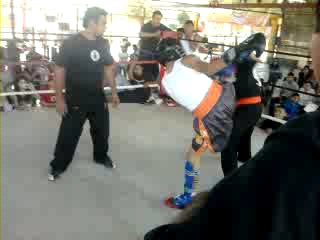

Padres
Armando Hugo Hernández Herrera es mi padre, nació en la ciudad de México es mi mejor amigo y todo un ejemplo a seguir lo amo.
Mi madre se llama Alma Lorena Moreno Jocobi, nació en la ciudad de los mochis, tiene 48 años y es una mujer como ninguna otra, trabaja desde que tengo memoria y ya tiene su propio negocio es todo un ejemplo a seguir.
Hermano
Mi hermano se llama Hugo Armando Hernández Moreno, nació en los Mochis Sinaloa tiene 27 años, es enojón pero inteligente y es buena onda, siempre me invita de vacaciones, otro pedo tomar con el y platicar también!
Abuelos paternos
Mis abuelos por parte de mi papá viven en la ciudad de México, mi abuelo es de Pachuca y mi abuela de Toluca, todavía son jóvenes y son los mejores siempre me ha gustado visitarlos espero poder ir pronto a verlos.
Mis abuelos maternos
Vivieron casi toda su vida en el poblado 7, mi abuelo es de chihuahua y mi abuela es del valle del carrizo. Mi abuelo ya no escucha muy bien y tiene problemas en la columna por trabajar tanto tiempo las tierras, mi abuela ya no recuerda a nadie, tiene 1 año encamada porque se fracturó la cintura y ya no puede caminar más.
Me adentré en la música cuando tenía 15 años, comencé como buen sinaloense adentrándome en la música ranchera, norteña y sierreña, me aprendí muchas canciones de banda y de grupos norteños. Eso hizo que me metiera en un grupo de música nos llamábamos "Los Quesochilis" y tocamos como en 3 fiestas aproximadamente, yo tocaba el bajo y cantaba, a veces tocaba el acordeón también pero como casi no le sabía no lo agarraba mucho más que en alguna que otra canción.
Cuando tenía 13 años me metí adentré a las artes marciales, siempre me gustó tirar golpes y meterme a este tipo de disciplinas fue la excusa perfecta para pelearme más seguido, estuve en más de 20 peleas y en 3 torneos de los cuales gané 2 y perdí 1. El último torneo en el que estuvo fue en el carrizo, perdí y fue mi retiro, desde ese entonces solamente entreno ocasionalmente. Gracias a este bonito deporte, me enchuecaron la mandíbula y hasta la fecha está chueca. También entrené diversas disciplinas como taekwndo y jiu jitsu brasileño, pero siempre me gustó más el kick boxing.
A la edad de 15 años años estaba bien entrado en el futbol soccer, jugaba con un equipo que se llamaba "Real Mochis" éramos bien malos, nunca ganamos un torneo, pero el entrenador era bueno y yo me consideraba bueno mi posición era defensa central de stoper principalmente y era capitán del equipo, aunque también me movía por las laterales como carrilero o en el medio campo. Una vez le ofrecieron a mi entrenador que yo jugara con Azucareros que en ese entonces era el equipo de segunda división de Los Mochis pero no aceptó él pensaba que yo estaba para entrar a un equipo de primer división. Tuve que ponerme a entrenar muy duro porque quería estar en un equipo grande, durante las vacaciones de verano, entrenaba con 3 diferentes entrenadores de lunes a viernes de 3 a 8, durante las primeras 2 horas entrenaba toque táctico, las otras dos horas eran entrenamiento física y las ultimas eran de reflejos y estrategia, los fines de semana jugaba 2 partidos con dos equipos diferentes. Entrené así de duro durante 2 meses, cuando llegó la hora que ir a la ciudad de México a visorias del equipo de primera división llamado "Cruz Azul" agarré camino. Cuando estaba ya en el Noria(lugar donde entrenan los jugadores), no corrí más de 30 minutos cuando ya no tenía aire estábamos a una altura a nivel del mar demasiada alta, sentía que todo el entrenamiento que había hecho era dioquis. Al final de cuentas no quedé en el equipo, dejé de jugar el futbol soccer. Pero no me desanimé todavía lo práctico de vez en vez, pero definitivamente ya no corro como antes.
Cosas random favoritas
Peliculas favoritas
- Pulp Fiction
- El origen
- La saga de Matrix
Video juegos favoritos
- Crusader Kings 2
- Starcraft 2
- Warcraft
Bebidas favoritas
- Cerveza Heineken
- Café negro
- Té negro
Comidas Favoritas
- Carne de puerco en salsa verde
- carne de res en chile pasilla
- Mole poblano
Lugares que quiero visitar
- Amsterdam
- china
- Berlin
Idiomas que quiero aprender
- Italiano
- Portuges
- Francés
- Mandarín
La verdad de las cosas
"Nada es absoluto, todo es relativo" - albert Einstein
Una frase muy peleada, muchos piensan que vivimos en un mundo linea, yo creo en los multiversos y las posibilidades de modificar tu destino. Pero todo desde distintos puntos de vista.
Cómo escogí mi carrera
No fue una decición muy comprometida de mi parte, cuando salí de la preparatoria pensaba en estudiar medicina en la UNAM, al estár allá me di cuenta que no era la mio por lo que regresé a mi ciudad natal. A los meses se abren las inscripciones para entrar a la univerdad del tecnológico de los mochis. Sin pensarla mucho escojo ingenieria en informática. Ahora tengo una persepción muy diferente. Pienso que puedo llegar a hacer grandes cosas sólo tengo que enfocarme correctamente y seguir haciendo las cosas como las hago.
Cosas que me interesan
Me interesa la mejora continua, siempre estár en constante movimiento,ser auto didacta,capacidad de adaptarse,siempre buscar mejorar e improvisar a cualquier situación. Pienso que son las caracteristicas que forman a una persona lista para cualquier adversidad.
Politica entre nosotros
Espero que lo que leas y veas aquí se quede entré nosotros, legalmente no puedo pedir que no uses esta información en mi contra. Pero moralmente te puedo pedir de favor que si almenos vas a tomar algo de este sitio sea para conseguirme un empleo. :)
Mi filosofía
"En el miedo del caos existe también la oportunidad" - Sun tzu
Pienso que es posible siempre salir de las adversidades, no importa que tan complicado sea, hay que tratar siempre de sacar la ventaja, mirar las oportunidades en los problemas es una cualidad a desarrollar en todos los seremos humanos.
Actitudes que me gustan
Actitud de cooperación, trabajo en equipo, proactivo, entusiasta, y con ganas de aprender sobre todo.
Actitudes que me disgustan
La pereza, la falta de compromiso, las mentiras, la falta de criterio, entre otras.